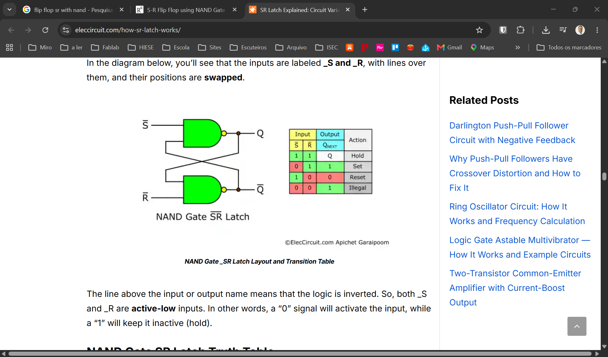
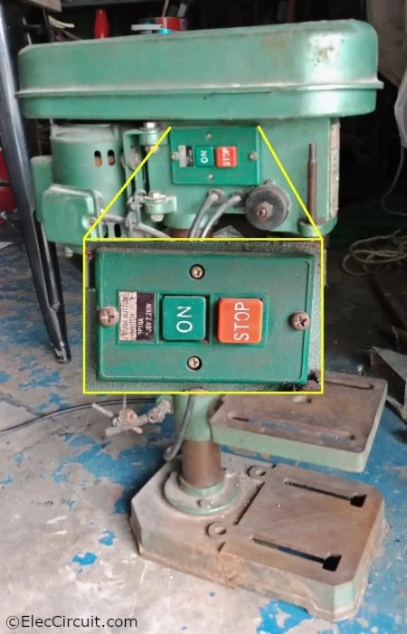
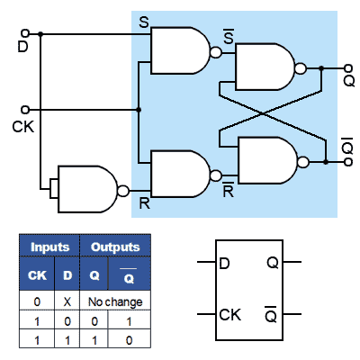
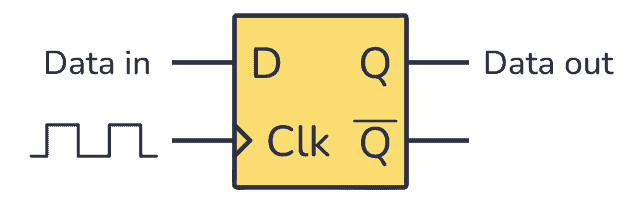
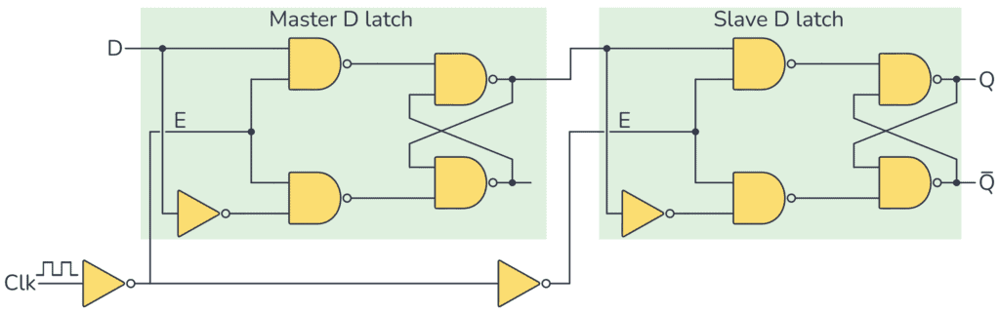
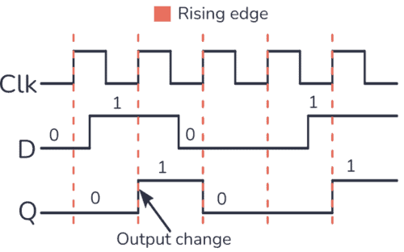
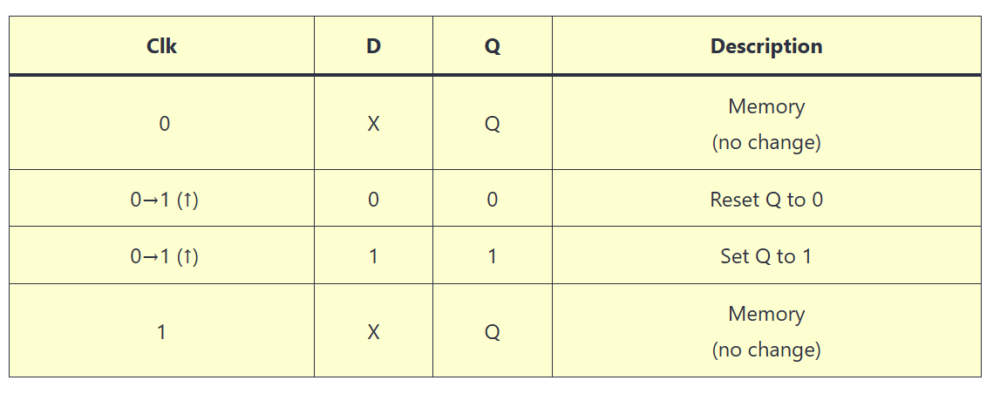

| S̄ | R̄ | Q | Q̄ | Estado |
|---|---|---|---|---|
| 0 | 1 | 1 | 0 | Set |
| 1 | 0 | 0 | 1 | Reset |
| 1 | 1 | Q | Q̄ | Hold |
| 0 | 0 | 1! | 1! | ⚠️ PROIBIDO |


| EN | D | Q (próximo) | Descrição |
|---|---|---|---|
| 0 | X | Q (mantém) | Latch fechado |
| 1 | 0 | 0 | Latch aberto |
| 1 | 1 | 1 | Latch aberto |



